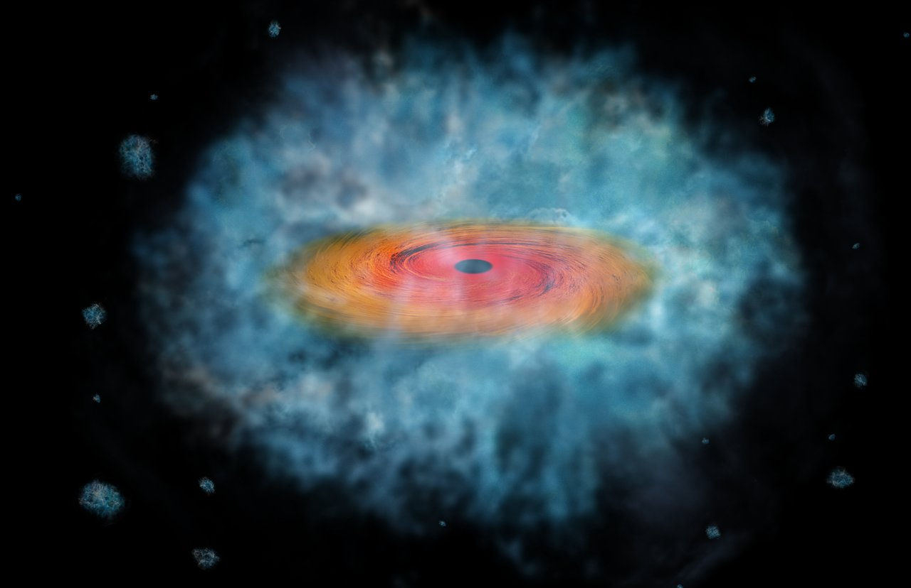

Formation of the first black holes
Some of the brightest quasars we know were already shining when the Universe was less than a billion years old, powered by black holes a billion times the mass of the Sun. Reaching that size so quickly is difficult to explain, and the problem starts right at the beginning: we still do not know how the first black holes formed.
Several possibilities have been proposed, ranging from the remnants of the first generation of stars to black holes formed through stellar collisions in dense star clusters, or through the direct collapse of massive clouds of primordial gas. These different formation pathways produce black holes with very different initial masses and environments, and each comes with its own challenges.
I use numerical and semi-analytical models to investigate these different scenarios, following how the first black holes form and grow as the first galaxies emerge and evolve. I am particularly interested in understanding what distinguishes these pathways and in predicting observable signatures that could help us tell them apart. With new observations probing the earliest galaxies and quasars, we may soon be able to put these different ideas to the test.
Relevant publications